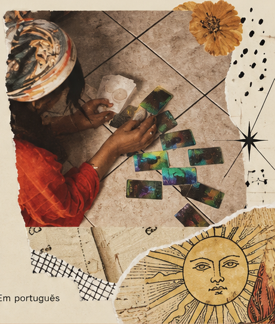

Tarô & consciência
Um espaço para você se conhecer melhor
Leitura de Tarô online para brasileiros em Portugal. Um convite para compreender seus padrões, fortalecer sua identidade e encontrar mais clareza no seu caminho.
Agendar minha leitura-
Atendimento
100% online -
Em todo
Portugal -
Em
português

Um olhar simbólico
O Tarô Terapêutico
O tarô terapêutico é um método de leitura das cartas voltado para o autoconhecimento e a reflexão emocional. Ele funciona como uma ferramenta simbólica que ajuda a pessoa a compreender melhor suas emoções, padrões e situações de vida.
Nesse processo, o tarô atua como um espelho da psique, refletindo conteúdos internos, que muitas vezes estão inconscientes, e que podem influenciar pensamentos, sentimentos e escolhas. As cartas, junto com o diálogo terapêutico, ajudam a trazer clareza e compreensão sobre o momento vivido.
Maria Eduarda
Quem sou eu?
Me chamo Maria Eduarda e atuo como taróloga, com foco no tarô terapêutico, utilizando as cartas como ferramenta de autoconhecimento, reflexão e desenvolvimento pessoal.
Além do tarô, tenho um interesse profundo pelo funcionamento da mente humana, o que me levou a estudar e me aprofundar em áreas como psicanálise, neurociência e outros campos relacionados ao comportamento e às emoções. Esses estudos acompanham minha trajetória desde muito nova e influenciam diretamente a forma como conduzo meus atendimentos.
Meu trabalho integra intuição, estudo e escuta terapêutica, com o objetivo de oferecer um espaço de acolhimento e compreensão para processos internos de transformação.
Tarô Terapêutico
Um método de integração interior
O tarô terapêutico, da forma que eu aplico, ajuda a compreender com mais profundidade o que você sente e vive internamente, trazendo clareza para momentos de confusão emocional, mental e também para questões relacionadas aos seus caminhos de vida.
Esse processo não busca mudar quem você é, mas te aproximar de uma forma mais consciente de si mesma, integrando aspectos emocionais, espirituais e também percepções sobre suas escolhas, habilidades e possibilidades de desenvolvimento pessoal e profissional.